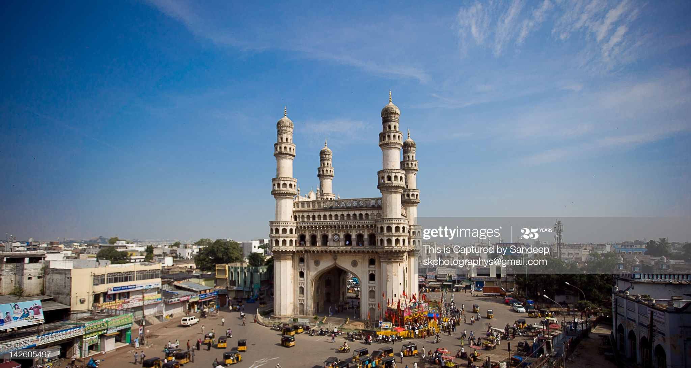

Let's talk about me and my journey
Standing by, for the right epiphany.
The following is my journey, to get to the important stuff click here.
Charminar, Hyderabad. Credits: Getty ImagesI was born and brought up in Hyderabad, Telangana (previously Andhra Pradesh), a culturally diverse and a technological hub of the Southern India on 27th December 1998. Hyderabad is located on the banks of Musi river and is famous for its Biryani, Pearls and its cultural diversity. The residents of Hyderabad proudly call themselves "Hyderabadi" and the city has its own heritage landmarks of Golconda, Charminar, Faluknama Palace and many more. I promise you, your visit to Hyderabad will be a once in a lifetime memorable one. Hyderabadi cuisine comprises mouth watering delicacies Biryani,, Haleem, Khaddu ka Kheer, double ka meetha. UNESCO listed Hyderabad in the creative city of gastronomy, so I'll lest exaggerate. :P
During my schooling days, I was not mature enough to know what I wanted to become and what course should I take in my graduation. I was also not aware of many scholarship and highschool internship/project challenges/fellowship opportunities which could help me know better of what's happening in the world. After my 10th grade, I chose Math, Physics and Chemistry (MPC) as my major subjects like any other kid in the class who did not want to become a doctor. But, I was sure enough of the subjects I took because, I liked doing math. I have joined the IIT-JEE coaching center which was quite common for a student who took MPC, but what happened here was something different. I was able to solve many questions in math. But the other two subjects was where I was lagging in. So, to put more focus onto the other subjects, I missed practising problems, which was quite important to succeed in competitive entrance exams.
Before realising what I was missing, the time to attempt entrance exams have come. I miserably failed in JEE, but did quite well in the state-level examinations. So, this helped me getting an admit in well established engineering college in the state. During my 11th and 12th grades, I was an ardent follower of smartphones. I knew by-heart the specifications of almost all the smartphones, its processors and also could predict if certain smartphone will lead the markets. Such was my following. This keen interest made me to search for the careers who designed these processors and other tech stuff. That is when I came in contact with Electronics Engineering.
After all these hectics, when I joined VRSEC, it was a different world for me. For someone who lived in a metropolitan city in his entire 18 years of life, this shift of location really made me feel intimidating, and took real time to adapt. But thanks to my friends, I found the 4 years I spent at Vijayawada to be the most memorable ones, that I will ever cherish in my life. We have been to Maredumilli, Kakinada (Hope Island), Machilipatnam, Southern Karnataka (Chikamagalur, Udipi, Coorg).
Now the things that matter:
I made a firm determination as soon as I completed my Day-1 at the college, that I should make a fine impression of myself in the college. I, along with my friends, frequently tried to curate innovative ideas and went along with professors if they might help. This did not make it to any eventual project, but this helped us gain a recognition from the Govt of AP, where Bharadwaj and I submitted two ideas in the ideathon that was conducted and we were given special invites to a workshop for Startup initiative in the state (StartAP) in Feb 2017. With this boost that we have got, we entered our department in the second year (we were in the common block for all the depts for first years). I was still enthusiastic and went on to search any potential professor who would like to induct me into his group. That is where I found Dr. V Praveen Naidu. It was really a tough second year for me trying to balance both academics and work from the professor. Here, I tried for innumerous internship opportunities at research groups from India and abroad through various internship programs of the concerned institutes. The only mistake that I realized later was, I had to "mail the professor" before getting an opportunity. In September of 2017, my friends and I participated in our first hackathon where we have done a project "Home automation using IBM Watson and Raspberry PI", which we went on to be runner-ups and received IBM Watson coupons for 6 months. In February of 2018, we again went onto be runner-ups in a hackathon held at IIT, Hyderabad where we developed a "Smart Sanitation System." In my second year summer break, I interned at NSIC, Hyderabad where I learnt PCB Designing, designing circuits for real-world applications. My first paper publication too was at this time itself. Entering my third year with all the achievements and enthusiasm, we were not juniors any more. We entered into the senior years of Engineering. I started planning my career, by starting to identify and clearing myself with what I really want to have as a career. I have been through many different thoughts and finally settled that, I want to be in micro/nanoelectronics and develop advanced products. After my third year, in the summer of 2019 I interned at Doordarshan (DD), Vijayawada which is a public broadcaster of India. At DD, I have learnt the ins and outs of communication systems in broadcasting and how Digital Signal Processing is used in real world. After quite a good experience, our final year has begun. I took a coaching for writing GATE but it could not materialise to fruition for whatsoever reasons. I don't know the exact reasons, but I did fluctuate between entering software industry to my core electronics and hence, did a couple of Machine Learning projects. I also think it is completely normal for a human to get into dilemma of the decision making process of building a career one truly wishes for. I had my first interview in August of 2019 at TCS which I did pretty well. After all the undergrad thesis work and stuff, corona virus pandemic has begun which has disrupted the entire globe. Finally, I am here at TCS as a Systems engineer developing software for a major telecom industry in the world. My love for electronics never dies and I am sure, I will take this futher into being a reality, as I wish to do a masters followed by a PhD. I am looking for opportunities as such and would like to know if you have any. I have held several positions such as IEEE Student Branch Chair from 2017-2019. Department co-ordinator for the Institute Innovation Council(IIC) which was funded by MHRD, Govt of India. Event organiser for the department's cultural fest and fresher's day (which is an event held for incoming freshers). During my tenure as IEEE student branch chair, I led a team of upto 30 members and responsible for organising a couple of workshops. And with Co-ordinator at IIC, several webinars and sessions from experts ranging from diverse fields have been held.If you find any of the content irrelevant or out of context, kindly let me know.